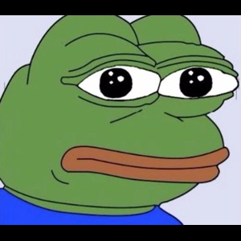

A viral image of Pepe became one of the most recognizable memes online.
This meme is nearing a decade old and shows the moment before disaster in a humorous way.
This image is still widely known today despite being an outdated meme and was used during "big brain moments".
This stock image of a boyfriend being distracted another woman became viral and was used to show disloyalty as well as favoritism.

A massive image of a low quality character named Pikachu where this would be used in ironic situations.

A meme where african men dancing became insanley popular which made fun of funny, but dangeour situations similar to the 2016 Meme
The Travis Scott apology meme typically features a humorous or exaggerated version of Travis Scott's apology during the Astroworld tragedy, often edited with sarcastic or exaggerated expressions to highlight the disconnect between his words and the situation.
The Will Smith slapping Chris Rock meme is all about turning that Oscars moment into a funny reaction shot, where people use it to over-the-top react to anything surprising or awkward.
The DJ Khaled dancing meme is basically just him vibing out to a song, and people use it to show off their own hype or excitement over random stuff in a goofy way.
The Symphony Dolphin meme is all about that epic dolphin doing a dramatic leap with orchestral music, used to make even the most random moments feel super intense and grand.